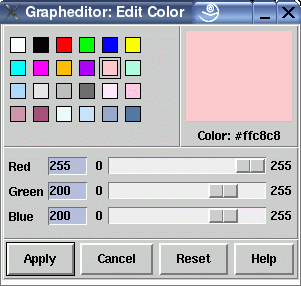

Manual
Color Editor Window
This graph editor dialog window is used to specify the color palette for the node attributes and edge attributes dialog windows. You can select a color from the palette and modify the color value by mixing the red, green and blue portion with the three sliders. The first two colors in the palette (black and white) cannot be selected, because they are fixed default values. The selected color is also displayed in the large color field. There you can see the RGB color value in HEX-notation.
Dialog Elements of the Color Editor Window
-
Red
Used to set the red RGB-portion of the currently selected color. -
Green
Used to set the green RGB-portion of the currently selected color. -
Blue
Used to set the blue RGB-portion of the currently selected color. -
Apply
Push button to accept the current settings of this dialog window. Without pressing this button, modifications to these options are not considered. -
Cancel
Push button to close the color editor window without performing any action. -
Reset
Push button to undo any modification to these options which were not confirmed using the "Apply" push button yet. So reset goes back to the current settings. -
Help
Push button to start the online help system with this page.
Copyright © 2005, Universität Bremen. All rights reserved.